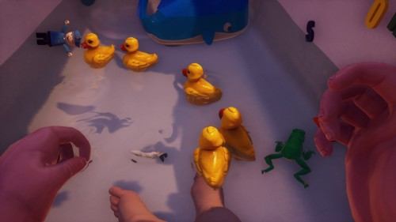
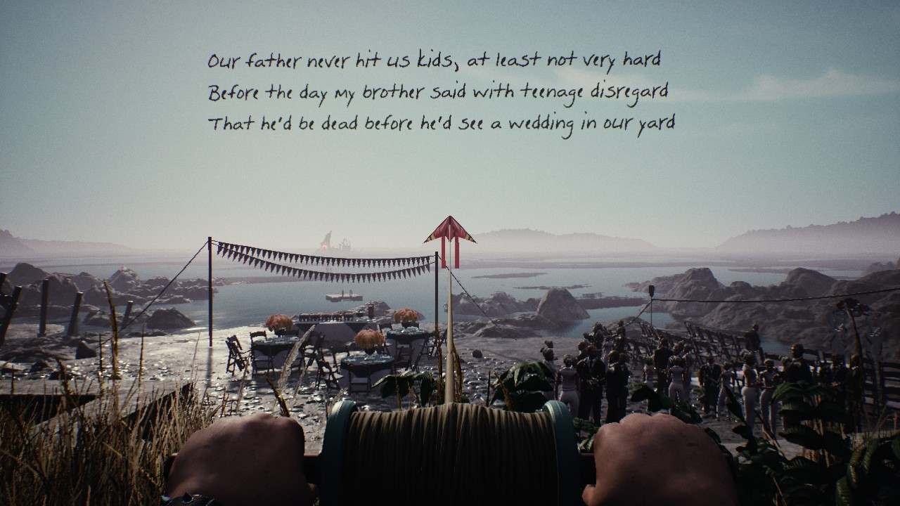
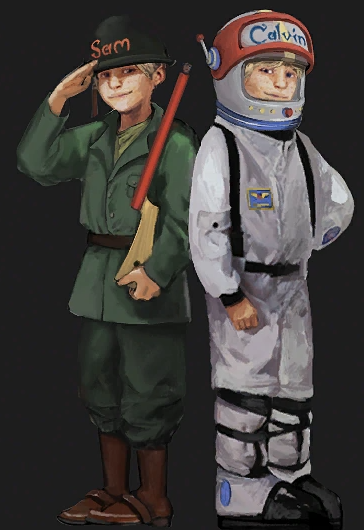
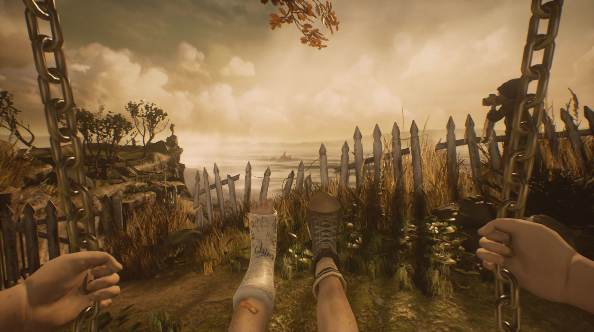
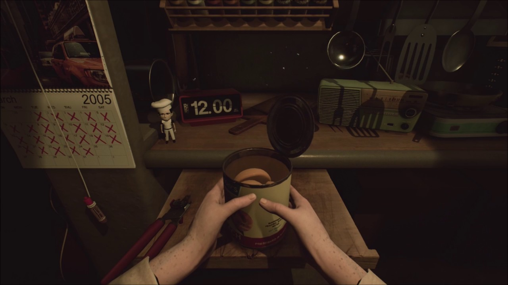
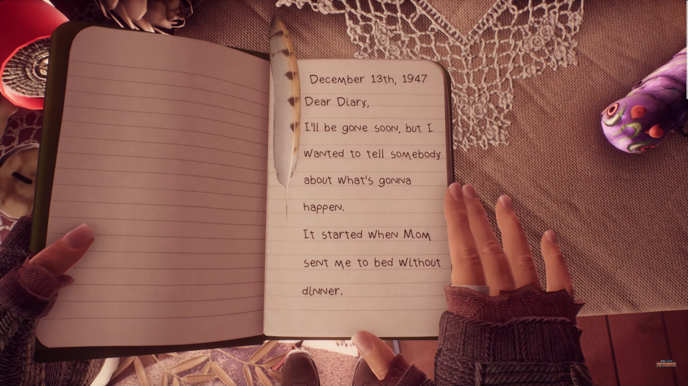
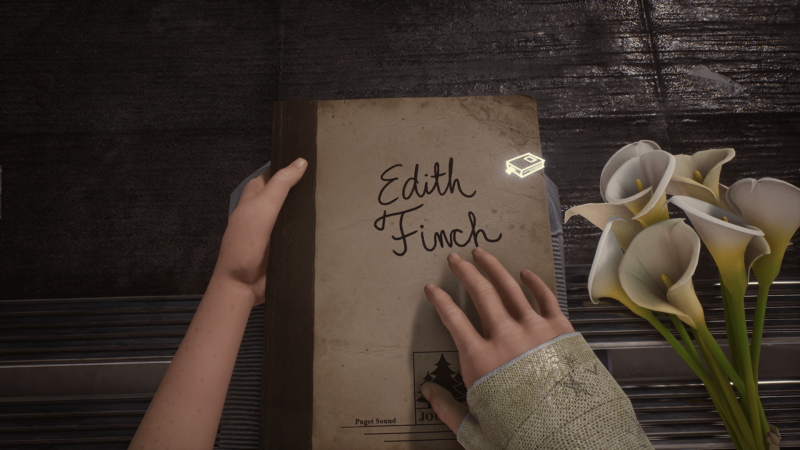

Speeches from "What remains of Edith Finch"
Character’s speeches from the game
- Sam to Kay about Gregory
- Dawn about Gus
- Lewis’s Psychiatrist about Lewis
- Sam about Calvin
- Walter to himself
- Molly in her diary
- Edith in her journal to Christopher
Sam to Kay about Gregory
Dear Kay,
Do you remember the way Gregory used to laugh when he thought he was alone?
Like something was happening but only he could see it.
I think he saw things the rest of us don’t.
I wonder what he saw. What his world was like. He reminded me so much of Calvin. Lost in his imagination.
Whatever it was he saw... It sure made him happy. I know how silly it sounds that I worried about a baby being too happy, but I felt him slipping away.
I know you did everything you could. Maybe if I hadn’t called that night…
I wish he could have told us. About the world he saw.
Kay, there’s so much I don’t understand. About Gregory... about everything... But I know what happened wasn’t your fault.
And wherever Gregory is now...
I’m sure he’s happy.
And he’d want you to be happy too.
Good luck Kay,
Love Sam

Dawn about Gus
A Poem for Gus
Who always said the wedding was a bad idea
Our father never hit us kids, at least not very hard.
Before the day my brother said with teenage disregard
That he’d be dead before he’d see a wedding in our yard.
My father made him come of course, but Gus stood far apart
Just flew his kite and bottled up the storm inside his heart
I tried to talk him out of it, but though he’d never met her
"We don’t need a stepmom," were the words that I remember
When the time for photos came dad ordered him to "Come here!"
But Gus declined and as a sign held up his middle finger
The wind picked up and panicked geese appeared and quickly went
But all that the humans did that day was go inside the tent
The rain came down in buckets then but no one seemed afraid
The nature might destroy the tent our father had crudely made
The thunder sounded much too close and full of angry power
But all my father said to this was "Make the music louder!"
I wish that I could truly say I thought about you on that day
Out there on the beach alone, just you the wind the sea and foam
But I didn’t. Until we found you.

Lewis’s Psychiatrist about Lewis
Dear Mrs. Finch,
As Lewis’s psychiatrist I can understand your desire for explanation. As I see it, the trouble began in January, shortly after we convinced your son to seek treatment for substance abuse.
Newly sober, I believe Lewis first noticed the monotony of his daily life. He kept working at the cannery but he withdrew part of himself. In our sessions I saw the same behavior.
His mind began to... wander. I asked him to describe it. He said he started small, imagining a labyrinth. He’d feel his way about. Then something moved... bats. And toads. And things that have not names. He knew it was all in his head, but he took it very seriously. I had hoped he’d find himself. But he found something more.
I worried about him then, daydreaming at the cannery. I spoke with his boss, but he said Lewis had become a model employee. Methodical, tireless, focused... Like a whole new Lewis. So I let him go on. I even encouraged him. It seemed very promising at first.
He told me he’d made a new friend on the edge of a city he named Lewistopia. He built the city up slowly, brick by brick. Then he made musicians and songs for them to play. He talked about starting a band and he was always humming something. Every day his imagination grew stronger. He no longer spoke at the cannery, but his chopping was as reliable as ever. Then one day it struck him that all the cheering crowds, even the stones under his feet were all in his imagination, so he could do whatever he wished. He held an election for a mayor and he won. They begged him to stay but his mind was already wandering.
It became a game for him. He’d conquer a city then immediately push on. He started drifting away from our reality. Until one day he forgot to go home from the cannery. Even as his mother pleaded with him, part of Lewis kept sailing on. In Lewisburg, he heard rumors of a beautiful prince/a handsome queen. The prince/The queen was on his/her own quest for radiant rainbows/sinister serpents. He followed the sound of his/her electric sitar/silver harp. His chase led him to a golden palace east of the sun and west of the moon.
Even then, his logic remained sound. He knew the world was all in his imagination, but he was so proud of having created it. In his own eyes, he’d become something greater than a king. For someone who’d never known success in the real world, I think it was overwhelming. And then it struck him that the real Lewis was not the one chopping salmon, but the one climbing the steps of a golden palace. "My imagination is as real as my body" he told me. It was hard to argue with him.
He began to forget the world we know. I think it pained him to remember Lewis, the cannery worker. He began to despise the man with the royal contempt. I still thought I could save him. Even after he said he was being crowned king over all the lands of Wonder.
The palace would be packed with his companions, including the wise calico who had insisted on advising him. His prince/queen waited, holding his crown. There was only one thing left to do. Bend down his head. And the rest I think you know.
Mrs. Finch, your son was a kind man who will be missed by all of us who knew him.
My sincerest condolences,
Dr. Emily Nuth

Sam about Calvin
How I Want to Remember My Brother,
by Sam Finch
The thing I remember is that when he made up his mind, that was it.
My brother said he’d die before he ate another mushroom. And he did.
At Barbara’s funeral we swore we’d never be afraid again. And he wasn’t. I think Calvin always wanted to fly but that day he finally made up his mind to do it. I told him going around was impossible. Maybe if I hadn’t said that.
Or maybe if the wind hadn’t picked up...
then maybe he’d still be here but I doubt it. I think he’d already made up his mind. That’s what I want to remember about my brother. The day he made up his mind to fly.
... and he did.


Walter to himself
Goodbye, everyone.
I can’t believe I’ve been down here for 30 years. On that first day, after the shaking started, I didn’t think I’d survive a week. But after a few days, I settled into a routine.
That’s what kept me sane. Having a schedule. Living for today. I always expected to be dead tomorrow.
But if you wait long enough, you’ll get used to anything. Even a monster, on the other side of the door, starts to feel normal. Almost... friendly. And then one day, everything just... stopped.
Whatever that thing was, it was gone. Maybe it got tired of waiting... Or maybe I just got tired of being afraid. It’s been a week now, the longest in 30 years. I’m done waiting.
I have to leave, while I still can. I know it’s out there... somewhere. Whatever killed Barbara... And Molly... And Calvin. Maybe this was all a mistake. But I need to stop living the same day. Even if it kills me.
Whatever’s out there, I want you to know I’m ready for it. I’m going to appreciate all of it. Especially the food. I don’t mind if I only have a year left, or a month, or a single week. I’d be happy with one new day. I can already imagine the sun on my face.

Molly in her diary
December 13th, 1947
Dear Diary,
I’ll be gone soon, but I wanted to tell somebody about what’s gonna happen. It started when Mom sent me to bed without dinner. I woke up and I was starving. So I looked around for something to eat.
The gerbil food was dry, but I didn’t mind it.
My Halloween candy was all gone
I thought about eating Christopher, but I held back.
I kept eating and eating.
I ate a lot of things that night.
Then I heard chirping outside my window. It was a barn swallow going back to her nest. I reached out for her, and suddenly... I was a cat! I tried to be quiet but the bird was really scared. Mom and Dad didn’t even look at me. I jumped and I almost got her. I could tell she was getting really tired. Now I was up in the big tree. I promised dad I wouldn’t climb it anymore. But all I cared about was eating that momma bird.
I gobbled her up... And suddenly I was an owl! First, all I heard was the wind. Then I heard little teeth nibbling in the grass. I imagined his face looking up and seeing mine, through my talons. I swallowed him up, and I didn’t chew one bit. Then I flew off to find something bigger. She was almost too big to carry. I started choking, but I couldn’t stop eating. And suddenly I was a shark!
I rolled off a cliff and into the ocean. Now I was hungrier than ever. I wanted fat, juicy seals. I tore off her flipper and it tasted really good. I grabbed on tight. But I was so hungry, I jumped out of the water. When I opened my eyes, everything had changed. Now I was a monster. and I smelled people everywhere. I was big, but I moved real quiet. I wanted to stop but also I didn’t.
After the last passenger, I was still hungry. And across the water I smelled something new. Something I had to have. So I swam towards it. I slithered onto the sand and the good smell went into an old pipe. I got closer and closer. All my stomachs started growling. And suddenly, I was me again. I held my breath for a long time but I couldn’t hear anything. I think it’s waiting for me to fall asleep. But it’s not going to wait much longer. It needs to feed. And we both know... I will be... delicious.

Edith in her journal to Christopher
If we lived forever, maybe we’d have time to understand things. But as it is, I think the best we can do is try to open our eyes. And appreciate how strange and brief all of this is.

Return to the top of the page.